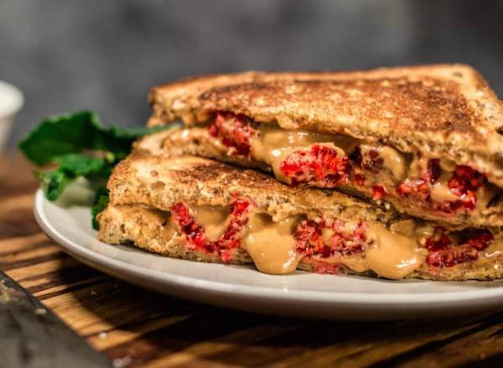

Gourmet PB&J

Description
Prepare your tastebuds for excellence. Never before have you drooled an unreasonable amount, only to have your mouth-puddle be completely justified by such culinary excellence as presented by this sandwich.
This heavenly delight includes a basic set of ingredients, and just a small amount of prep time. Your benefit: a delicious treat served up in minutes for yourself or even a few lucky guests. Let's dive in.
Ingredients
- 2 slices of a bread of your choice (skip the white bread people. come on, live a little)
- Crunchy peanut butter
- High quality raspberry jam
- Butter
Steps
- lay out pieces of bread
- using a knife, spread approximately two tablespons of crunchy peanut butter on one of the slices
- using the same knife (do not clean it), spread approximately one tablespoon of raspberry jam onto the remaining slice
- assemble the sandwich
- lick the knife clean (DO NOT SKIP THIS STEP)
- with the clean knife, spread a thin layer of butter on the topside of the sandwich
- place the sandwich, butter-side down, onto a skillet over medium heat.
- while one side is browning, butter the dry topside of the sandwich
- after cooking for approximately one minute, flip the sandwich using a spatula
- cook for an additional minute
- allow to cool for approximately two minutes